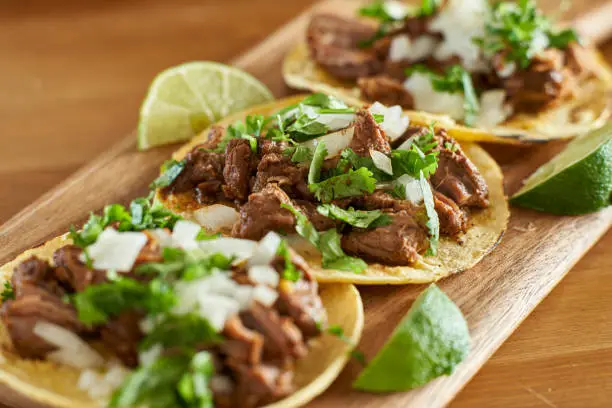

Carne Asada Tacos
Origin: Carne asada tacos originated in Mexico, specifically in the north, in regions like Sonora and . The term "carne asada"
means grilled meat in spanish. There were lots of ranchers in cattle in the north of Mexico, so beef became the main source of protein. Carne
asada was created by grilling beef over a fire and then slicing it. The beef would the be stuffed into a corn tortilla to create carne asada tacos.

Ingredients
- Steak (flank or skirt)
- Jalapeno
- Garlic
- Cilantro
- Orange Juice
- Lime Juice
- Olive Oil
- Salt and Pepper
- Corn tortillas
Recipe
- In a large glass baking dish mix together the marinade ingredients (jalapeno through pepper)
- Add the skirt steak to the marinade and refrigerate from 1-8 hours
- Preheat your grill, then grill your steak 7-10 minutes per side. Let rest for 5 minutes once done cooking
- Slice across the grain and serve in a corn tortilla, you can add onions, cilantro, and salsa as a topping.
Sources:
https://backyardtaco.com/blog/carne-asada-history/
https://www.tasteatlas.com/carne-asada-tacos